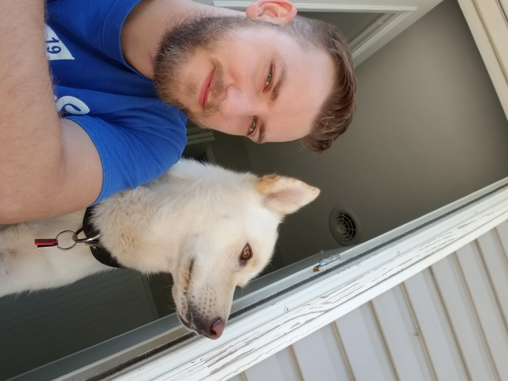

| Name: | Jonathan Hatfield |
| Age: | 28 |
| Current Job Occupation: | Front of House Server |
| Year in College: | Junior |
| Major: | IT and Comp Sci |
I am a student at Mizzou currently. I recently moved to Columbia in January and started to attend as a Junior in the fall of 2022. I currently work at a restaurant called Sophia's where I am a server. Between work and school there is little time for hobbies and being social. When at home I spend time with my girl friend Hannah and my dog Sammie. We like to game, watch tv, dance, and listen to music.
Sammie and me 5 years ago!
